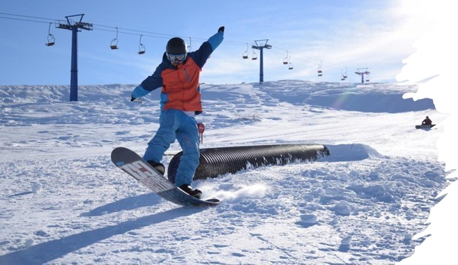
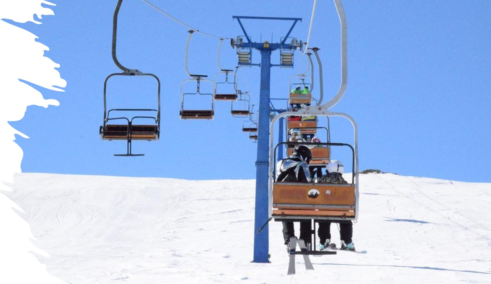

GET READY FOR THE MOST EXCIDING ADVENTURE!
Get baked in the sun, Popova Shapka promises a good time every season.
Popova Shapka
Popova Shapka is the most famous winter sports and recreation center in the Republic of Macedonia. It is characterized by a large number of sunny days and snow cover from October to May. Suitable for all skiing disciplines. It is especially attractive for professional and recreational skiers. Popova Shapka has beautiful ski terrains with an area of 35 km

Sunny days
150 sunny days during the winter season

Snow
Average snow depth between 30cm - 60cm
Close to city
18km from the city of Tetovo
Close to airport
Less than 100 km from SKP